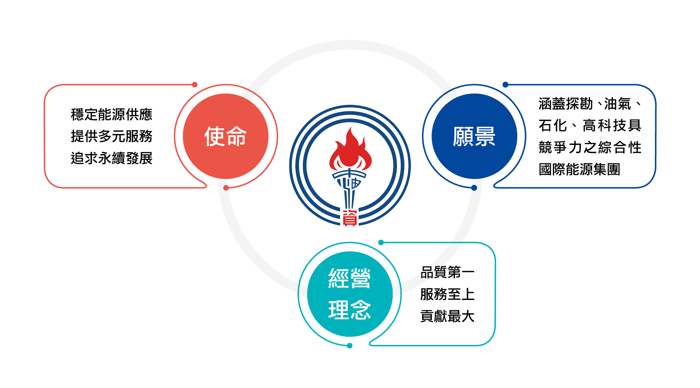
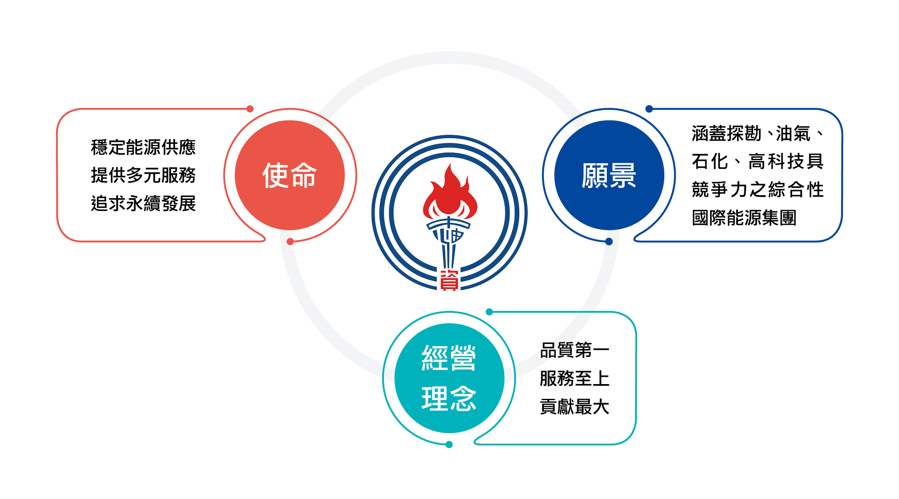

CSR 永續發展專區
台灣中油成立已逾70年，除肩負國營事業穩定油氣價格等責任外，亦戮力充分供應國內所需油氣產品，協助石化中下游產業發展，並致力環境品質的提升，善盡企業社會責任，融洽社會關係。為順應世界潮流，配合國際環保趨勢，台灣中油自2003年即制定下列永續經營政策。
台灣中油成立已逾70年，除肩負國營事業穩定油氣價格等責任外，亦戮力充分供應國內所需油氣產品，協助石化中下游產業發展，並致力環境品質的提升，善盡企業社會責任，融洽社會關係。為順應世界潮流，配合國際環保趨勢，台灣中油自2003年即制定下列永續經營政策。
